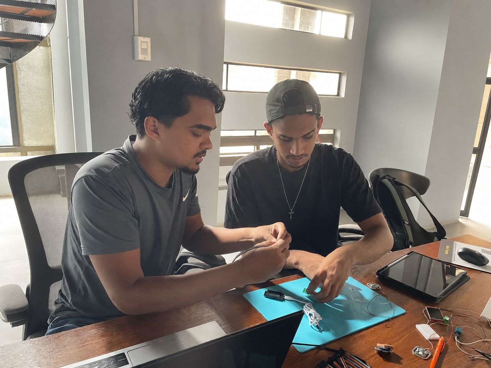
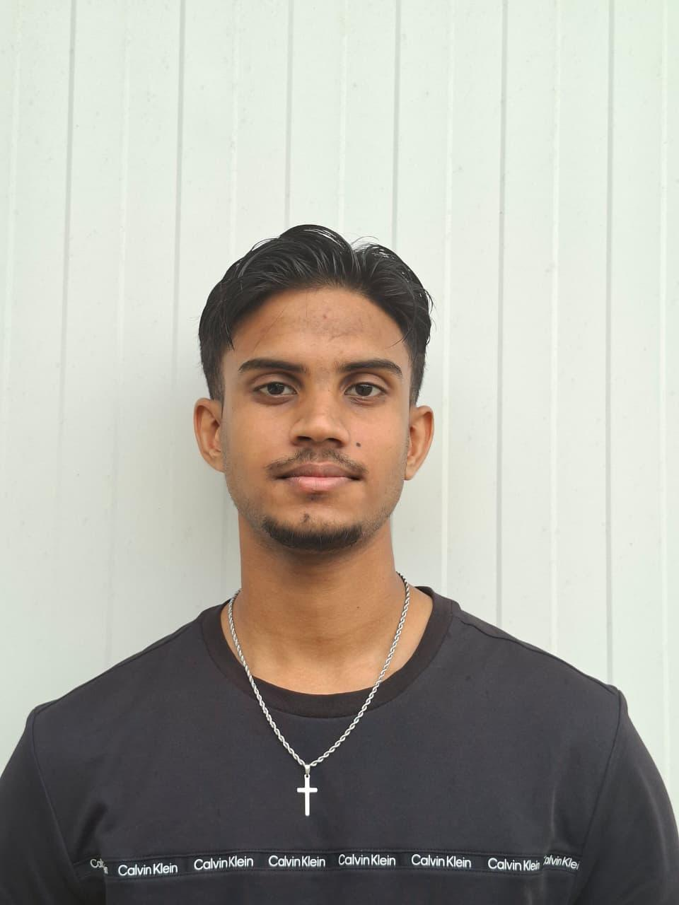
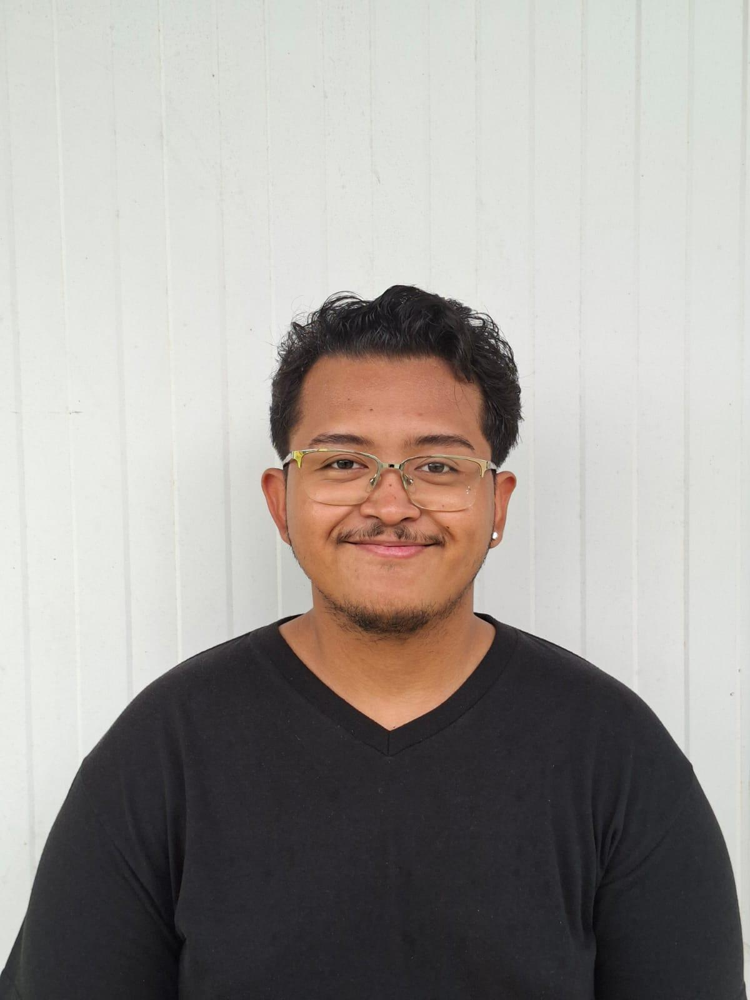
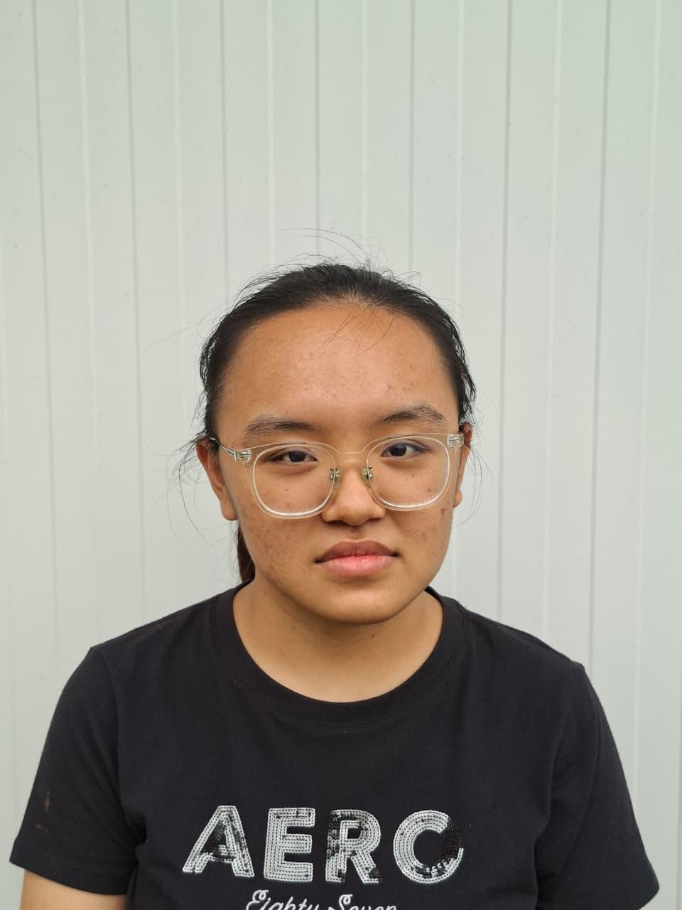
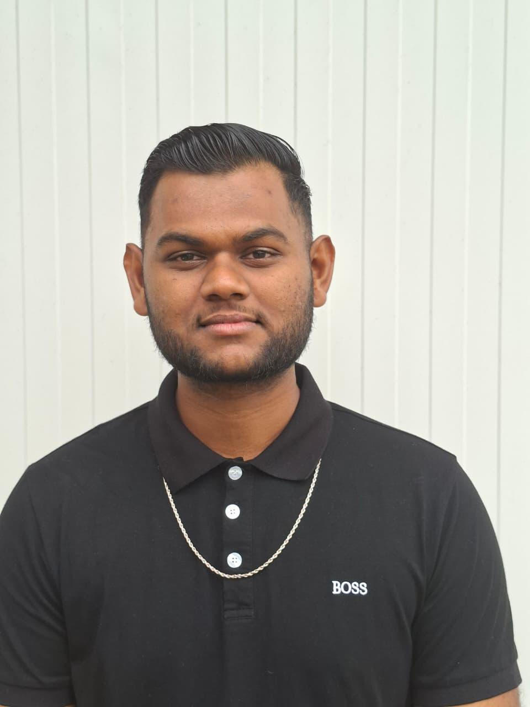
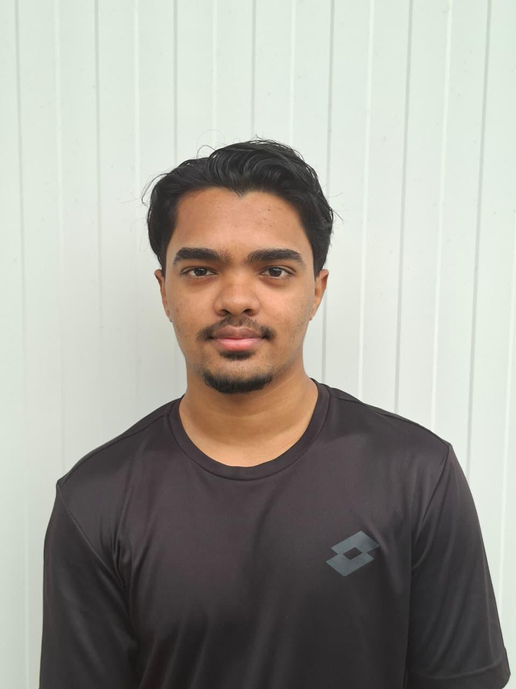

ENGINEERING SPONTANEITY INTO THE FUTURE.
ARCAN is a high-octane student collective bridging the gap between raw engineering curiosity and market-ready innovation. We don't just build; we break, iterate, and evolve.


PROJECT SPOTLIGHT: TERRASUR
A revolutionary multi-strata soil monitoring system designed for precision agriculture. Terrasur utilizes real-time chemical analysis and IoT connectivity to optimize crop yield while reducing water waste by up to 40%.
Zero Latency
Real-time data streaming
Eco-Integrated
Biodegradable housing
THE MINDS BEHIND ARCAN
Meet the multidisciplinary team of engineers, designers, and visionaries pushing the boundaries at HackOmation.

Arjan Radja
Hardware / Power Lead
Specializing in embedded systems and sustainable hardware design.

Axel Mendonca
UI Front End Dev
Focusing on human-centered design for technical interfaces.

Crystal Xiao
AI and Data Analyst/Backend
Expert in real-time processing and complex data visualization.

Nitesh Nithoer
Embedded Software Dev
Transforming raw sensor output into actionable ecological insights.

Ruud Kalka
UX Designer
Pioneering autonomous deployment systems for environmental sensors.
READY TO BUILD?
We are always looking for collaborators, mentors, and fellow enthusiasts to join our mission at HackOmation. Let's engineer something remarkable.